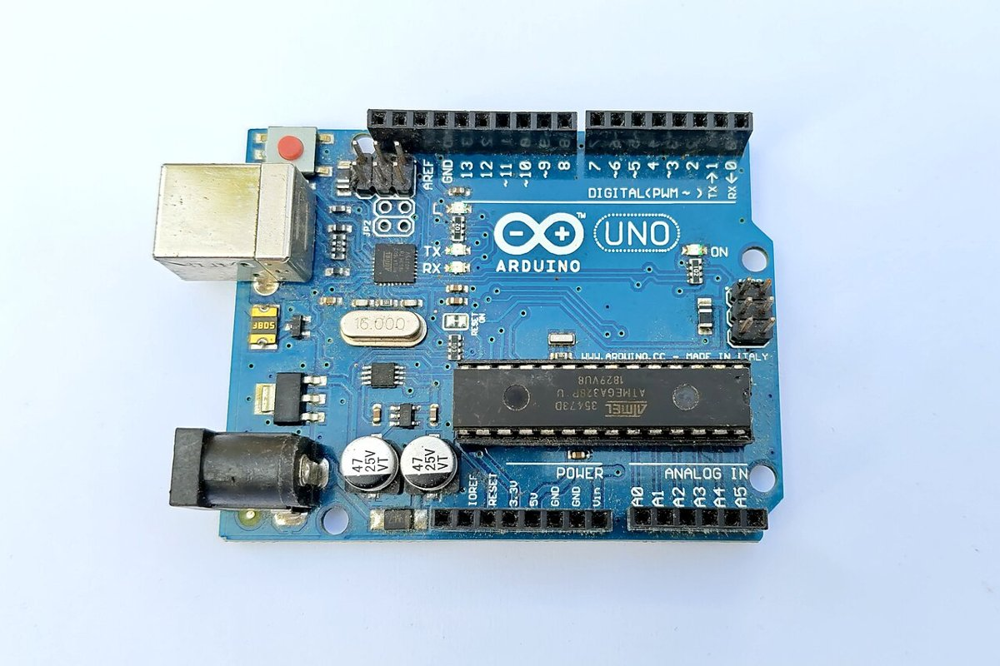
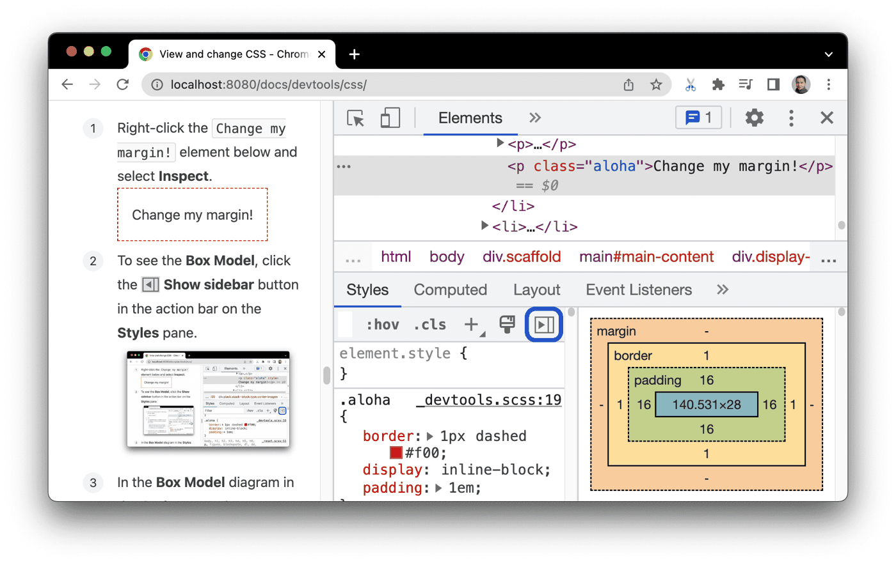
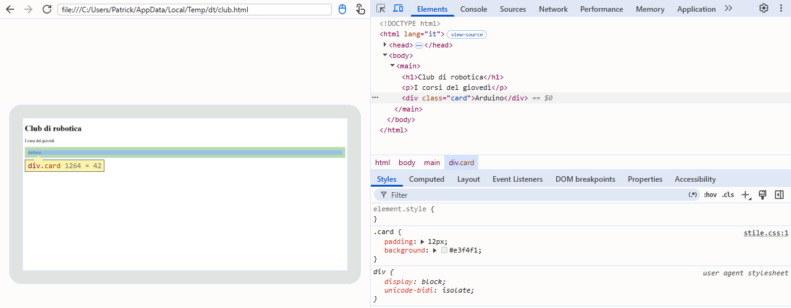

CSS: base
6.1Sfondi, bordi e ombre
Immagini di sfondo
background-image: url("foto.jpg") mette un’immagine dietro al contenuto dell’elemento. Altre proprietà decidono come:

background-size:auto(la grandezza vera dell’immagine), una misura, oppurecover, che riempie tutto l’elemento e taglia ciò che avanza, ocontain, che mostra tutta l’immagine e può lasciare dei vuoti;background-position: dove sta l’immagine (center,right bottom,20% 50%);background-repeat: se si ripete come una piastrella (repeat, il valore iniziale), solo in orizzontale (repeat-x), in verticale (repeat-y) o no (no-repeat).
Si possono mettere più sfondi, separati da virgole: il primo sta sopra. È il modo classico per scurire una foto e renderci leggibile sopra un titolo bianco, con un gradiente trasparente sopra l’immagine.
Un’immagine di sfondo è decorazione: non ha testo alternativo, gli screen reader non la annunciano e chi stampa la pagina spesso non la vede. Se l’immagine porta un contenuto (la foto di un prodotto, un grafico, il ritratto di una persona), va nell’HTML con <img> e il suo alt.
Errore tipico
«L’immagine importante la metto come sfondo con il CSS.»
Uno sfondo non ha testo alternativo: chi usa uno screen reader non sa che c’è. Le immagini che portano contenuto vanno nell’HTML con <img alt="…">.
Errore tipico
«background-size: cover mostra tutta l’immagine.»
cover riempie l’elemento e taglia ciò che non entra. Per vedere tutta l’immagine serve contain, che però può lasciare dei vuoti.
Gradienti
Un gradiente è una sfumatura tra due o più colori. Per il CSS è un’immagine generata dal browser, non un colore: per questo si scrive in background-image (o nella forma abbreviata background), mai in background-color. Ce ne sono tre tipi:
linear-gradient()sfuma lungo una retta: si indica una direzione (to right) o un angolo, con0degverso l’alto e90degverso destra;radial-gradient()sfuma dal centro verso l’esterno, a cerchi o ellissi, con forma e posizione;conic-gradient()gira intorno a un centro come le lancette: serve per grafici a torta e ruote di colore.
Ogni colore può avere una posizione (red 30%). Se due colori hanno la stessa posizione non c’è sfumatura: si ottiene un taglio netto, utile per strisce e bandiere: linear-gradient(90deg, green 33%, white 33% 66%, red 66%).
Errore tipico
«background-color: linear-gradient(…) funziona.»
Un gradiente è un’immagine, non un colore: in background-color la dichiarazione non è valida e viene scartata. Si scrive in background-image o in background.
Bordi e angoli
border: spessore stile colore disegna un bordo intorno all’elemento. Lo stile è obbligatorio, perché il suo valore iniziale è none: i più usati sono solid, dashed (tratteggiato), dotted (a puntini) e double. Se manca il colore, il bordo prende currentColor, cioè lo stesso colore del testo. Si può dare un bordo a un solo lato con border-top, border-right, border-bottom, border-left.
border-radius arrotonda gli angoli. Con uno, due, tre o quattro valori si comporta come margin, ma parte dall’angolo in alto a sinistra e gira in senso orario. Con 50% un quadrato diventa un cerchio; con un valore molto grande (999px) un rettangolo diventa una pillola.
border-radius con uno, due, tre o quattro valori
16px28px 00 28px 8px0 12px 24px 36px50% (quadrato)999pxoutline sembra un bordo, ma è diverso: è disegnato fuori dall’elemento, sopra a ciò che c’è intorno, e non occupa spazio, quindi non sposta nulla. Non si può dare a un solo lato. Il browser lo usa per mostrare quale elemento ha il fuoco quando si naviga con la tastiera: per questo non va tolto senza metterci qualcosa al suo posto.
Errore tipico
«outline è un bordo come gli altri.»
outline non occupa spazio e non sposta i vicini, sta sopra e fuori dall’elemento e non si può dare a un lato solo. Serve soprattutto a segnalare il fuoco.
Ombre
box-shadow aggiunge un’ombra alla scatola dell’elemento. I valori, in ordine:
box-shadow: 0 8px 24px 0 rgb(0 0 0 / 25%);
/* x y sfocatura diffusione colore */- spostamento orizzontale e verticale (
xey): valori positivi a destra e in basso, negativi a sinistra e in alto; - sfocatura (facoltativa): 0 dà un’ombra netta, valori più alti un’ombra morbida;
- diffusione (facoltativa): allarga (positiva) o restringe (negativa) l’ombra;
- colore: di solito un nero trasparente; con la parola
insetl’ombra va dentro l’elemento.
Si possono sovrapporre più ombre separate da virgole; l’ombra segue la forma data da border-radius e non cambia l’impaginazione. text-shadow fa la stessa cosa per il testo, ma senza diffusione e senza inset. Un’ombra non rimedia a un contrasto troppo basso tra testo e sfondo; l’ombra della forma vera di un’immagine trasparente si fa con filter: drop-shadow() (7.4).
Errore tipico
«Il terzo valore di box-shadow è la distanza dell’ombra.»
Il terzo valore è la sfocatura: con 0 l’ombra ha i bordi netti. La distanza la danno i primi due valori, gli spostamenti x e y.
Immagini nella pagina
Un’immagine nell’HTML (<img>) ha la sua grandezza naturale e, se è più larga del contenitore, ne esce. La regola che si scrive quasi sempre è questa:
img {
max-width: 100%; /* mai più larga del contenitore */
height: auto; /* l’altezza segue, senza deformare */
}Quando invece l’immagine deve riempire un riquadro di misura data (una miniatura quadrata, la foto di una card), si usa object-fit, che funziona come background-size ma per le immagini di contenuto:
fill(il valore iniziale) riempie il riquadro deformando l’immagine;coverlo riempie mantenendo le proporzioni e taglia ciò che avanza;containmostra tutta l’immagine e può lasciare dei vuoti.
aspect-ratio: 16 / 9 dà a un elemento delle proporzioni fisse. E gli attributi width e height scritti nell’<img> servono anche con il CSS: dicono al browser le proporzioni prima che l’immagine sia scaricata, così riserva lo spazio giusto e il testo non salta in basso quando la foto arriva.
object-fit | background-size | |
|---|---|---|
| si usa per | immagini di contenuto (<img>, <video>) | immagini di sfondo (CSS) |
| riempire e tagliare | cover | cover |
| tutta, con i vuoti | contain | contain |
| valore iniziale | fill: deforma | auto: grandezza vera |
| testo alternativo | sì, con alt | no |
Errore tipico
«width e height fissi in CSS non danneggiano la foto.»
Se le proporzioni non sono quelle della foto, object-fit: fill la deforma. Si fissa una sola misura con height: auto, oppure si aggiunge object-fit: cover.
Una foto 4:3 con width: 200px; height: 200px. Come appare?
6.2Testo, link e liste
Famiglie di caratteri
font-family non indica un solo carattere ma una lista in ordine di preferenza, separata da virgole. Il browser usa il primo font della lista che è installato sul computer di chi legge; se non ne trova nessuno, usa il suo predefinito. I nomi che contengono spazi vanno tra virgolette: "Segoe UI", "Times New Roman".
Per questo la lista finisce sempre con una famiglia generica, una parola chiave che c’è su ogni computer e che il browser traduce nel font adatto di quel sistema:
serif: caratteri con le grazie, i piccoli tratti alle estremità delle lettere (Times, Georgia), tipici dei libri;sans-serif: caratteri senza grazie (Arial, Helvetica, Segoe UI), i più usati sugli schermi;monospace: caratteri a larghezza fissa, dove ogni lettera occupa lo stesso spazio (Consolas, Courier): per il codice;- e poi
cursive,fantasyesystem-ui, il carattere dell’interfaccia del sistema operativo.
Con e senza grazie
Scrivo font-family: "Gill Sans". Tutti quelli che aprono la pagina vedranno Gill Sans?
Errore tipico
«Scrivo font-family: "Gill Sans" e tutti vedranno Gill Sans.»
Il browser usa solo i font installati sul computer di chi legge (o scaricati con @font-face, 7.2). Senza alternative e senza famiglia generica, chi non ce l’ha vede il carattere predefinito.
Font web
Per usare un carattere che sul computer di chi legge non c’è, lo si fa scaricare insieme alla pagina, con la regola @font-face: si sceglie un nome, si indica il file e il peso, e poi quel nome si usa in font-family come qualunque altro.
@font-face {
font-family: "Titoli"; /* il nome che scegliamo noi */
src: url("font/titoli.woff2") format("woff2"); /* il file */
font-weight: 700; /* il peso contenuto nel file */
font-display: swap; /* nel frattempo, il font di riserva */
}
h1 {
font-family: "Titoli", Georgia, serif;
}Il formato da usare è WOFF2, compresso e letto da tutti i browser moderni. Ogni font e ogni peso (normale, grassetto, corsivo…) è però un file in più da scaricare, e la pagina si appesantisce: meglio pochi pesi, solo quelli usati davvero. I font variabili contengono tutti i pesi in un solo file, che conviene quando ne servono molti.
Finché il file del font non è arrivato, che cosa mostra il browser? Senza indicazioni, per qualche istante nasconde il testo. Con font-display: swap lo mostra subito con il font di riserva e lo sostituisce quando il font arriva.
Il servizio più usato è Google Fonts, che offre centinaia di caratteri gratuiti. Si possono caricare dai server di Google con un <link>, oppure scaricare i file e ospitarli sul proprio sito.
Un caso di cronaca
Il 20 gennaio 2022 il tribunale di Monaco di Baviera ha condannato il gestore di un sito a pagare 100 euro a un visitatore: caricando un carattere dai server di Google Fonts, il sito aveva trasmesso a Google l’indirizzo IP del visitatore senza il suo consenso (causa 3 O 17493/20). È un fatto di cronaca, non una regola generale: mostra però perché molti siti europei hanno scelto di ospitare i font in locale, sul proprio server, cosa che le licenze di Google Fonts permettono.
Errore tipico
«Più font e più pesi carico, più la pagina è bella.»
Ogni font e ogni peso è un file da scaricare: la pagina diventa più lenta, soprattutto sul telefono. Due famiglie e pochi pesi bastano quasi sempre.
Errore tipico
«Incorporare Google Fonts è solo un link, non cambia nulla per la privacy.»
Il browser di chi visita il sito si collega ai server di Google e gli trasmette l’indirizzo IP. Per questo molti siti ospitano i font in locale.
Dimensione, peso e stile
font-size fissa la dimensione del testo, con le unità del 5.5 (di solito rem). font-weight fissa il peso, cioè lo spessore dei tratti, con un numero da 100 (sottilissimo) a 900 (nerissimo): normal vale 400, bold vale 700, mentre lighter e bolder sono relativi al genitore.
Ma un peso esiste solo se il font lo contiene: molti font hanno soltanto il normale e il grassetto. Se si chiede un peso che manca, il browser usa il più vicino disponibile, oppure simula il grassetto ispessendo le lettere, con un risultato peggiore.
font-style sceglie tra normal, italic e oblique. italic usa il corsivo vero, disegnato apposta, con forme diverse (guarda la «a» in molti font); oblique inclina semplicemente il carattere normale.
La scala dei pesi (se il font li contiene)
Errore tipico
«font-weight: 900 rende più nero qualunque font.»
Funziona solo se il font ha quel peso. Altrimenti il browser usa il peso più vicino (spesso il 700) o lo simula.
Spaziatura e allineamento
line-heightè l’interlinea, la distanza tra le righe. Si scrive senza unità (5.5), così scala con il testo di ogni elemento; per il testo continuo si usa di solito un valore tra 1,4 e 1,6;letter-spacingè lo spazio tra le lettere,word-spacingquello tra le parole: poco, e soprattutto per i titoli in maiuscolo;text-indentè il rientro della prima riga di un paragrafo, come nei libri;text-alignallinea le righe di testo:left,right,center,justify(giustificato, con le righe che arrivano tutte ai due margini). Esistono anchestartedend, che si adattano alle lingue scritte da destra a sinistra.
text-align allinea il contenuto dentro la scatola dell’elemento, non la scatola nella pagina: un paragrafo con text-align: center ha le righe centrate, ma resta largo quanto prima. Per centrare un blocco si usano i margini (6.3) o Flexbox (7.1).
Il testo giustificato lascia spesso dei buchi tra le parole. Si attenuano con la sillabazione, hyphens: auto, che però funziona solo se la lingua della pagina è dichiarata (<html lang="it">).
Le linee guida per l’accessibilità (WCAG, criterio 1.4.12) chiedono che il testo resti leggibile, senza tagli né sovrapposizioni, anche quando l’utente porta l’interlinea a 1,5: niente altezze fisse sui contenitori di testo.
Errore tipico
«text-align: center centra il paragrafo nella pagina.»
Centra le righe di testo dentro il paragrafo; la scatola del paragrafo non si sposta. Per centrare un blocco servono margin: 0 auto con una larghezza, o Flexbox.
Errore tipico
«line-height: 20px è come line-height: 1.5.»
Con l’unità il valore è fisso e viene ereditato già calcolato: un titolo grande ha le righe sovrapposte. Senza unità si moltiplica per il testo di ogni elemento.
Decorazioni e trasformazioni
text-decorationdisegna una linea sul testo: tipo (underline,line-through,none), stile (wavy,dotted…), colore e spessore.text-underline-offsetsposta la sottolineatura più in basso, lontano dalle lettere;text-transform(uppercase,lowercase,capitalize) cambia l’aspetto, non il testo: chi copia il testo o usa uno screen reader trova le lettere come sono scritte nell’HTML;white-spacedecide che cosa fare di spazi e a capo (tabella sotto);overflow-wrap: anywherepermette di spezzare le parole lunghissime, come un indirizzo web, che altrimenti uscirebbero dal riquadro.
white-space | Spazi multipli | A capo dell’HTML | Va a capo da solo |
|---|---|---|---|
normal | uniti in uno | ignorati | sì |
nowrap | uniti in uno | ignorati | no |
pre | conservati | conservati | no |
pre-wrap | conservati | conservati | sì |
pre-line | uniti in uno | conservati | sì |
Per tagliare un titolo troppo lungo con i puntini di sospensione serve text-overflow: ellipsis, che però da solo non fa niente: il testo deve stare su una riga (white-space: nowrap) e la parte che avanza deve essere nascosta (overflow: hidden).
Errore tipico
«text-overflow: ellipsis basta per avere i puntini.»
Servono anche white-space: nowrap, perché il testo non vada a capo, e overflow: hidden, perché la parte in eccesso sia tagliata.
Stile dei link
I link hanno pseudo-classi tutte loro: :link (link non ancora visitato), :visited (già visitato), a cui si aggiungono :hover, :focus e :active (5.3). :any-link prende tutti i link, visitati o no.
Le pseudo-classi hanno tutte la stessa specificità, e un link può essere in più stati insieme (visitato e con il mouse sopra). Quindi decide l’ordine di scrittura, e l’ordine giusto è LVHA: :link, :visited, :hover, :active (in inglese si ricorda con LoVe HAte). Se :hover venisse prima di :visited, un link visitato non cambierebbe mai colore al passaggio del mouse.
a:link { color: #0a6f66; }
a:visited { color: #6b4fa0; }
a:hover { color: #c2410c; }
a:active { color: #e9a313; }Due limiti e due attenzioni. Per motivi di privacy :visited accetta solo proprietà di colore: altrimenti un sito potrebbe scoprire, misurando la pagina, quali altri siti hai visitato. Non si toglie l’outline del fuoco senza metterci un altro segno ben visibile, perché chi naviga con la tastiera non saprebbe più dove si trova. E il colore da solo non basta a riconoscere un link (chi non distingue i colori non lo vede): di solito si tiene la sottolineatura.
Errore tipico
«L’ordine delle regole sui link non conta.»
Le pseudo-classi dei link hanno la stessa specificità: a parità vince l’ultima. Con un ordine diverso da LVHA alcuni stati non si vedono mai.
Errore tipico
«a:visited { display: none; } nasconde i link già visitati.»
Per privacy :visited accetta solo proprietà di colore: la dichiarazione viene ignorata.
Errore tipico
«outline: none toglie solo un contorno fastidioso.»
Toglie l’unico segno che mostra dove si trova chi usa la tastiera. Se proprio si toglie, va sostituito con un altro segno ben visibile.
Un link già visitato, con il mouse sopra. Prima c’è a:hover { color: red; }, poi a:visited { color: purple; }. Di che colore è?
Liste
list-style imposta il simbolo delle voci (list-style-type: disc, circle, square, decimal, lower-alpha, lower-roman, none), la sua posizione (fuori o dentro il testo) ed eventualmente un’immagine. Lo pseudo-elemento ::marker permette di colorare e ingrandire il simbolo: li::marker { color: #0a6f66; }. Gli attributi HTML start e reversed di <ol> fanno partire la numerazione da un altro numero o la fanno contare all’indietro.
Il rientro a sinistra degli elenchi non viene dal simbolo ma dal padding-left che il foglio di stile del browser dà a ul e ol (circa 40px). Per questo, nelle barre di navigazione fatte con un elenco, si scrivono sia list-style: none sia padding-left: 0.
Da dove viene il rientro degli elenchi
- Arduino
- Stampa 3D
- Robot
padding-left del foglio del browser- Arduino
- Stampa 3D
- Robot
list-style: none i pallini spariscono, il rientro restaCon i contatori del CSS si può numerare anche ciò che non è un elenco, come i titoli di un documento: counter-reset crea il contatore, counter-increment lo fa avanzare, counter() dentro il content di uno pseudo-elemento lo mostra.
Errore tipico
«list-style: none toglie anche il rientro dell’elenco.»
Toglie solo il simbolo. Il rientro viene dal padding-left del browser: serve anche padding-left: 0.
6.3Il box model
Content, padding, border, margin
Per il browser ogni elemento è una scatola rettangolare, anche un link o una parola in grassetto. La scatola è fatta di quattro strati, dal centro verso l’esterno: è il box model, il modello della scatola.
- il contenuto (content): il testo, l’immagine o gli elementi figli;
- il padding: lo spazio interno, tra il contenuto e il bordo;
- il bordo (border): la cornice, che può avere spessore zero;
- il margine (margin): lo spazio esterno, che separa la scatola dalle altre.
Lo sfondo dell’elemento si estende sotto il contenuto, il padding e il bordo, ma non sotto il margine, che resta sempre trasparente: attraverso il margine si vede lo sfondo del genitore.

Errore tipico
«Il margine fa parte dello sfondo dell’elemento.»
Lo sfondo arriva fino al bordo. Il margine è sempre trasparente: lì si vede lo sfondo del genitore.
Larghezza e altezza
Senza indicazioni, un elemento di blocco ha width: auto, che vuol dire tutta la larghezza disponibile nel contenitore, e height: auto, cioè l’altezza che serve al contenuto. Di solito conviene lasciarle così: il testo va a capo e la scatola cresce da sola.
Quando servono dei limiti si usano min-width, max-width, min-height e max-height. max-width è la più utile: max-width: 70ch o max-width: 1100px lascia che un blocco si stringa sugli schermi piccoli ma gli impedisce di allargarsi troppo su quelli grandi.
Una trappola classica: height: 100% funziona solo se il genitore ha un’altezza definita. Se il genitore è auto, la percentuale non ha niente su cui calcolarsi e viene ignorata. Per dire «almeno alto quanto la finestra» si usa min-height: 100vh (o 100dvh, 5.2); per «almeno così alto, ma che cresca se serve», min-height al posto di height.
Errore tipico
«Con width: 100% e un padding l’elemento sta sempre nel contenitore.»
Con il box-sizing predefinito (content-box) il padding si aggiunge al 100%: l’elemento esce dal contenitore. Serve box-sizing: border-box (più avanti).
Errore tipico
«height: 100% fa riempire tutta la pagina.»
La percentuale dell’altezza funziona solo se il genitore ha un’altezza definita; altrimenti è ignorata. Per occupare almeno la finestra si usa min-height: 100vh.
box-sizing: content-box contro border-box
box-sizing decide che cosa misurano width e height:
content-box(il valore predefinito): misurano solo il contenuto. Padding e bordo si aggiungono: un elemento conwidth: 200px,padding: 20pxe un bordo di 5px occupa 200 + 40 + 10 = 250px;border-box: misurano la scatola fino al bordo compreso. Padding e bordo stanno dentro la larghezza e il contenuto si restringe: lo stesso elemento occupa esattamente 200px.
Con border-box i conti tornano come uno se li aspetta, soprattutto con le percentuali. Per questo quasi tutti i fogli di stile cominciano con un piccolo reset che lo applica a tutto:
*, *::before, *::after {
box-sizing: border-box;
}Un div con width: 200px; padding: 20px; border: 5px solid. Quanto spazio occupa in orizzontale?
Errore tipico
«Con width: 200px l’elemento occupa sempre 200px, anche con padding e bordo.»
Solo con box-sizing: border-box. Con il valore predefinito, content-box, padding e bordo si aggiungono ai 200px.
Margini
I margini hanno qualche comportamento speciale. Il primo: quando due blocchi stanno uno sopra l’altro, il margine inferiore del primo e quello superiore del secondo si fondono (margin collapsing): la distanza tra i due è il più grande dei due margini, non la somma. Succede solo con i margini verticali e nel flusso normale: i margini orizzontali non si fondono mai, e nemmeno quelli tra gli elementi di un contenitore Flexbox o Grid.
Un paragrafo con margin-bottom: 20px, sotto un paragrafo con margin-top: 30px. Quanti pixel li separano?
Il secondo: margin: 0 auto centra in orizzontale un blocco che ha una larghezza definita (o una max-width): il browser divide lo spazio libero in parti uguali a destra e a sinistra. In verticale, nel flusso normale, auto vale zero: per centrare in verticale servono Flexbox o Grid (7.1 e 7.2).
Il terzo: i margini possono essere negativi. Un margine negativo avvicina un elemento ai vicini fino a sovrapporlo, o lo fa sporgere fuori dal contenitore.
Margini negativi
margin-top: -18pxmargin-left: -28pxInfine, le proprietà logiche come margin-inline (destra e sinistra) e padding-block (sopra e sotto) indicano i lati secondo la direzione del testo invece che come alto, destra, basso, sinistra: in una lingua scritta da destra a sinistra si adattano da sole.
Errore tipico
«margin: auto centra anche in verticale.»
Nel flusso normale auto in verticale vale zero: centra solo in orizzontale, e solo un blocco con una larghezza definita.
Errore tipico
«Due blocchi affiancati con i margini orizzontali: i margini si fondono.»
Si fondono solo i margini verticali tra blocchi uno sopra l’altro. Quelli orizzontali si sommano sempre.
Due card una sopra l’altra, margin-bottom: 24px la prima e margin-top: 24px la seconda. Le metto in un contenitore con display: flex; flex-direction: column. La distanza cambia?
Differenza tra margin e padding
Padding e margine sono tutti e due spazio vuoto, ma da parti opposte del bordo. Il padding fa «respirare» il contenuto dentro l’elemento: il testo di un pulsante non tocca i bordi. Il margine separa l’elemento dai vicini.
Lo stesso elemento con solo padding e con solo margine
padding: 24px: lo spazio è dentro, colorato dallo sfondo, e fa parte dell’area cliccabilemargin: 24px: lo spazio è fuori, trasparente, e allontana l’elemento dal contenitore| Padding | Margine | |
|---|---|---|
| dove sta | dentro il bordo | fuori dal bordo |
| sfondo | prende lo sfondo dell’elemento | trasparente |
| area cliccabile | ne fa parte (un link più comodo da toccare) | non ne fa parte |
| si fonde con i vicini | mai | sì, in verticale nel flusso normale |
| valori negativi | non ammessi | ammessi |
Errore tipico
«Per staccare un elemento dal vicino uso il padding.»
Il padding allarga lo spazio dentro l’elemento (e il suo sfondo). Per allontanarlo dai vicini serve il margine.
overflow
Quando una scatola ha un’altezza (o una larghezza) fissa e il contenuto è più grande, il contenuto trabocca. La proprietà overflow decide che cosa farne:
visible(il valore iniziale): il contenuto esce dalla scatola e si sovrappone a ciò che c’è sotto;hidden: il contenuto in eccesso è tagliato e non si vede;scroll: compaiono le barre di scorrimento, sempre, anche se non servono;auto: le barre compaiono solo se servono.
Con overflow-x e overflow-y si decide separatamente per l’orizzontale e il verticale: una tabella larga in un contenitore con overflow-x: auto si può far scorrere di lato sul telefono senza allargare tutta la pagina. Esiste anche clip, simile a hidden ma più rigido: non permette di scorrere nemmeno con JavaScript.
Errore tipico
«overflow: hidden fa scorrere il contenuto.»
hidden lo taglia: la parte in eccesso non si vede e non si raggiunge. Per scorrere servono auto o scroll.
Errore tipico
«overflow: scroll e overflow: auto sono uguali.»
scroll mostra le barre sempre, anche quando il contenuto entra; auto solo quando servono.
6.4Flusso normale e display
Il flusso normale (blocco e in linea)
Prima di qualunque regola di impaginazione, il browser dispone gli elementi secondo il flusso normale (normal flow): li prende nell’ordine in cui compaiono nell’HTML, dall’alto in basso, e li sistema in due modi diversi.
- gli elementi di blocco (block) vanno sempre a capo: ognuno comincia su una riga nuova e, con
width: auto, occupa tutta la larghezza del contenitore, anche se il suo testo è corto. I blocchi si impilano uno sotto l’altro; - gli elementi in linea (inline) scorrono dentro la riga come le parole di un testo: sono larghi quanto il loro contenuto, si mettono uno dopo l’altro e vanno a capo solo quando la riga è piena.
Blocchi impilati e elementi in linea che scorrono
Chi decide se un elemento è di blocco o in linea? Non l’elemento in sé, ma il foglio di stile del browser (user agent stylesheet), che assegna a ogni tag il suo display iniziale:
| Comportamento | Elementi |
|---|---|
di blocco (display: block) | div, p, h1…h6, ul, ol, section, header, footer, nav, main, form |
in linea (display: inline) | span, a, em, strong, code, br |
| in linea ma sostituiti | img, input, button, video: stanno nella riga ma hanno dimensioni proprie |
Gli ultimi della tabella sono gli elementi sostituiti (replaced elements): il loro contenuto non è testo dell’HTML ma qualcosa che il browser «sostituisce» (un’immagine, un campo di un modulo). Stanno in linea come le parole, però hanno una larghezza e un’altezza loro e accettano width e height. Un caso a parte è li, che ha un display tutto suo, list-item: un blocco con il marcatore (più avanti).

<div class="card">Arduino</div>. Nella scheda Styles, sotto la regola .card di stile.css, c’è quella del foglio di stile del browser (user agent stylesheet): div { display: block; }. Nessuno l’ha scritta nel sito. A sinistra, il div evidenziato occupa tutta la larghezza della pagina, anche se contiene una parola sola.Errore tipico
«Gli elementi vanno dove li metto io, senza un ordine.»
Nel flusso normale seguono l’ordine del codice: un elemento scritto dopo compare dopo, sotto (se è un blocco) o più avanti nella riga (se è in linea).
Errore tipico
«Un div è largo quanto il suo testo.»
Un blocco con width: auto occupa tutta la larghezza del contenitore, anche con una sola parola. Larghi quanto il contenuto sono gli elementi in linea.
display (block · inline · inline-block · none)
La proprietà display cambia il comportamento assegnato dal browser. In realtà dice due cose: come si comporta l’elemento verso l’esterno (blocco o in linea, rispetto ai vicini) e come dispone all’interno i suoi figli (flusso normale, Flexbox, Grid: 7.1 e 7.2). I valori di base:
block: va a capo, occupa tutta la larghezza e accetta tutto:width,height, margini e padding in ogni direzione;inline: sta nella riga e ignorawidtheheight. Padding e margini orizzontali allontanano i vicini; quelli verticali si vedono (lo sfondo si allarga) ma non spostano le righe;inline-block: sta nella riga come una parola, ma accettawidth,heighte margini come un blocco. È il modo classico di affiancare piccoli riquadri, come i pulsanti;none: l’elemento non esiste nell’impaginazione, come se non fosse nell’HTML (più avanti).
Ci sono poi valori più specifici: list-item è il display dei li (un blocco con il marcatore); flow-root è un blocco che contiene i propri float e non lascia uscire i margini dei figli (6.5); contents fa sparire la scatola dell’elemento lasciando al loro posto i figli, come se il genitore non ci fosse. inline-flex e inline-grid si vedranno con Flexbox e Grid.
Metto width: 200px su uno <span>. Quanto diventa largo?
Il widget mostra anche una sorpresa: tra due inline-block scritti su righe diverse dell’HTML compare uno spazio di qualche pixel. Non è un margine: è lo spazio (o l’a capo) tra i tag, che negli elementi in linea conta come lo spazio tra due parole. Lo stesso motivo lascia un piccolo vuoto sotto le immagini: un img è in linea e si appoggia sulla linea di base del testo, sotto la quale resta lo spazio per le lettere come g e p. Si risolve con display: block sull’immagine.
Errore tipico
«Uno span con width: 200px diventa largo 200px.»
Gli elementi in linea ignorano width e height. Lo span resta largo quanto il testo, finché non gli si dà display: inline-block o block.
Errore tipico
«inline-block e block sono uguali.»
Accettano tutti e due le misure, ma block va a capo e occupa tutta la riga, inline-block resta nella riga, largo quanto serve, accanto agli altri.
Errore tipico
«Tra due inline-block c’è uno spazio che non ho messo: è un bug.»
È lo spazio tra i tag nell’HTML, che in linea vale come lo spazio tra due parole. Sparisce scrivendo i tag attaccati, o con Flexbox (gap al posto degli spazi).
Errore tipico
«Sotto la mia immagine c’è uno spazio: è un margine.»
L’immagine è in linea e si appoggia sulla linea di base del testo: sotto resta lo spazio per le lettere con la gamba. Con display: block sparisce.
Differenza tra display: none e visibility: hidden
Ci sono più modi di nascondere un elemento, e non sono equivalenti:
display: nonetoglie l’elemento dall’impaginazione: i vicini prendono il suo posto, non si può cliccare né raggiungere con la tastiera e i lettori di schermo (i programmi che leggono la pagina a voce alle persone non vedenti) lo ignorano;visibility: hiddenlo rende invisibile ma il suo spazio resta occupato: al suo posto c’è un buco. Non è cliccabile né letto. A differenza didisplay: none, un figlio convisibility: visibletorna visibile dentro il genitore nascosto;opacity: 0lo rende trasparente: lo spazio resta e l’elemento è ancora cliccabile e letto dai lettori di schermo. È invisibile solo agli occhi;- l’attributo HTML
hidden(<p hidden>) equivale adisplay: none, ma basta una regola CSS con un altrodisplaysull’elemento per farlo ricomparire.
Nascondo il secondo di tre paragrafi. Con display: none il terzo sale? E con visibility: hidden?
| Spazio occupato | Cliccabile | Letto dai lettori di schermo | Un figlio può riapparire | |
|---|---|---|---|---|
display: none | no | no | no | no |
visibility: hidden | sì | no | no | sì, con visibility: visible |
opacity: 0 | sì | sì | sì | no (l’opacità si moltiplica) |
attributo hidden | no | no | no | no (ma un display nel CSS lo annulla) |
Errore tipico
«display: none e visibility: hidden sono la stessa cosa.»
Tutti e due nascondono, ma display: none libera lo spazio (i vicini si spostano), visibility: hidden lo lascia occupato.
Errore tipico
«opacity: 0 nasconde come display: none.»
Con opacity: 0 l’elemento è solo trasparente: occupa lo spazio, si può ancora cliccare e i lettori di schermo lo leggono.
6.5Position e float
position (static · relative · absolute · fixed · sticky)
Il flusso normale (6.4) va bene per quasi tutto, ma a volte un elemento deve stare in un punto preciso: un’etichetta «Nuovo» sull’angolo di una card, una barra che resta in alto mentre si scorre, un pulsante «torna su» fisso in un angolo. Per questo c’è la proprietà position, con cinque valori.
Il valore iniziale è static: l’elemento sta nel flusso normale. Con gli altri quattro l’elemento diventa posizionato e si possono usare le proprietà di spostamento top, right, bottom e left (oppure la scorciatoia inset, che le imposta tutte e quattro come margin). Su un elemento static queste proprietà non hanno effetto.
relative: l’elemento si sposta rispetto alla posizione che avrebbe nel flusso.top: 20pxlo abbassa di 20px,left: 30pxlo sposta di 30px a destra. Il suo posto originale resta occupato: i vicini non se ne accorgono;absolute: l’elemento esce dal flusso (i vicini si comportano come se non ci fosse e ne prendono il posto) e si colloca rispetto al più vicino antenato posizionato, cioè il primo antenato conpositiondiverso dastatic. Se non ce n’è nessuno, si colloca rispetto alla pagina. La sua larghezza, conwidth: auto, diventa quella del contenuto;fixed: comeabsolute, ma il riferimento è la finestra del browser: quando la pagina scorre, l’elemento resta fermo;sticky: l’elemento scorre con la pagina finché non raggiunge la soglia indicata (per esempiotop: 0); da lì resta attaccato al bordo, ma solo finché il suo genitore è visibile: quando il genitore esce, se lo porta via. Senza soglia (top,bottom…) non fa niente, e non funziona se un antenato haoverflowdiverso davisible.
Lo schema più usato è la coppia genitore relative + figlio absolute: il genitore resta nel flusso e non si sposta (nessun top né left), ma diventa il riferimento del figlio, che si può mettere in un suo angolo con top: 0; right: 0.
stile.css.card {
position: relative; /* il riferimento */
}
.card .etichetta {
position: absolute;
top: 8px;
right: 8px; /* angolo in alto a destra della card */
}
Un div con position: absolute sta dentro un genitore senza position. Rispetto a che cosa si colloca?
Il widget non ha fixed, perché dentro una pagina che scorre in un riquadro si comporterebbe come absolute. L’animazione seguente mostra static, sticky e fixed mentre la pagina scorre.
Quando fixed non è fisso
Un elemento fixed si colloca rispetto alla finestra solo se nessun suo antenato ha un transform (7.4) o un filter: in quel caso il riferimento diventa quell’antenato e l’elemento scorre con lui. Se una barra fissa «non resta ferma», è la prima cosa da controllare.
Errore tipico
«position: relative sposta l’elemento e libera il suo posto.»
Con relative l’elemento si vede spostato, ma il suo posto originale resta occupato: i vicini non si muovono. A liberarlo è absolute.
Errore tipico
«absolute si posiziona rispetto al genitore.»
Rispetto al più vicino antenato posizionato. Il genitore è il riferimento solo se ha un position diverso da static (di solito relative).
Errore tipico
«top funziona su ogni elemento.»
top, right, bottom e left funzionano solo sugli elementi posizionati. Su un elemento static non hanno effetto.
Errore tipico
«sticky funziona anche senza top.»
Senza una soglia (top, bottom…) l’elemento sticky si comporta come relative e scorre via con la pagina.
Differenza tra relative, absolute, fixed e sticky
I quattro valori si distinguono rispondendo a tre domande: rispetto a che cosa si colloca l’elemento? Lascia il suo spazio nel flusso? Che cosa fa quando la pagina scorre?
| Valore | Riferimento | Spazio nel flusso | Allo scroll | Uso tipico |
|---|---|---|---|---|
relative | la sua posizione normale | resta occupato | scorre con la pagina | riferimento per i figli absolute, piccoli ritocchi |
absolute | il più vicino antenato posizionato (o la pagina) | liberato | scorre con il riferimento | icona o etichetta sull’angolo di un’immagine o di una card |
fixed | la finestra | liberato | resta fermo | barra in alto, pulsante «torna su», banner dei cookie |
sticky | la finestra, dentro il genitore | resta occupato | scorre, poi si ferma alla soglia | intestazione di una tabella o di una sezione |
z-index e sovrapposizione
Gli elementi posizionati possono sovrapporsi. Chi sta sopra? A parità di condizioni, l’elemento che viene dopo nel codice. Per cambiare l’ordine c’è z-index: un numero intero (anche negativo); più è alto, più l’elemento sta in primo piano. Funziona sugli elementi posizionati e sui figli di un contenitore Flexbox o Grid.
C’è però una regola che sorprende: z-index non vale per tutta la pagina, ma dentro il proprio contesto di impilamento (stacking context). Un contesto è come una pila di fogli chiusa in una cartellina: i fogli si possono riordinare dentro la cartellina, ma la cartellina intera sta sopra o sotto le altre cartelline. Un contesto nuovo lo crea, tra l’altro:
- un elemento posizionato con un
z-indexdiverso daauto; - un elemento con
opacityminore di 1; - un elemento con un
transformo unfilter.
I contesti si confrontano tra loro come blocchi unici: il z-index di un figlio conta solo dentro il suo contenitore. Per questo un elemento con z-index: 100 può restare sotto un altro con z-index: 5.
A ha z-index: 100 dentro un contenitore con z-index: 1; B ha z-index: 5 dentro un contenitore con z-index: 2. Chi sta sopra?
Errore tipico
«z-index: 9999 mette un elemento sopra tutto.»
Solo dentro il suo contesto di impilamento. Se il suo contenitore crea un contesto più in basso di un altro, l’elemento resta sotto, qualunque numero abbia.
Errore tipico
«z-index funziona su qualsiasi elemento.»
Funziona sugli elementi posizionati (non static) e sui figli di Flexbox e Grid. Su un paragrafo normale non ha effetto.
Float e clear (testo attorno a un’immagine · contenitore collassato · clearfix)
float: left (o right) porta un elemento sul lato sinistro (o destro) del contenitore e fa scorrere il testo attorno, come in un giornale. È nato proprio per questo: un’immagine dentro un articolo.
Il testo scorre attorno all’immagine in float
img { float: left; margin: 0 12px 6px 0; }Il float ha due effetti collaterali. Il primo: un elemento in float non conta nell’altezza del genitore. Se un riquadro con un bordo contiene un’immagine in float e poco testo, il bordo avvolge solo il testo e l’immagine esce sotto: il genitore è collassato. I rimedi:
display: flow-rootsul genitore: crea un blocco che contiene i propri float. È il modo moderno;- il clearfix: uno pseudo-elemento vuoto in fondo al genitore che «scende sotto» i float con
clear: both, trascinando giù il bordo.
clearfix.riquadro::after {
content: "";
display: block;
clear: both;
}
Il secondo: gli elementi che seguono il float gli scorrono accanto. Per farli ripartire sotto il float si usa clear: left, clear: right o clear: both.
Per anni i float sono stati usati anche per affiancare le colonne di una pagina, con molti trucchi. Oggi quel lavoro lo fanno Flexbox e Grid (7.1 e 7.2): il float resta per ciò per cui è nato, il testo attorno a un’immagine.
Errore tipico
«Il float serve a fare i layout a colonne.»
Si faceva così prima di Flexbox e Grid, con molti trucchi. Oggi il float serve solo a far scorrere il testo attorno a un elemento.
Errore tipico
«Il genitore si allarga attorno a un figlio in float.»
Il float non conta nell’altezza del genitore, che collassa. Serve display: flow-root o il clearfix.
Ricorda
- Le immagini di sfondo si controllano con size, position, repeat e si sovrappongono; le immagini di contenuto vanno nell’HTML.
- Un gradiente è un’immagine generata: va in background-image, mai in background-color.
- border imposta spessore, stile e colore; outline è un contorno che non occupa spazio.
- box-shadow ha offset, sfocatura, diffusione e colore; non cambia l’impaginazione.
- max-width:100% adatta l’immagine al contenitore, object-fit decide come entra in un riquadro dato.
- font-family è una lista in ordine di preferenza che finisce con una famiglia generica.
- @font-face rende scaricabile un font, ma ogni font e peso è un file in più che rallenta la pagina.
- Il peso del font esiste solo se il font lo contiene; italic è un corsivo disegnato, oblique un testo inclinato.
- line-height senza unità scala col testo; text-align allinea il contenuto, non la scatola.
- I puntini di text-overflow compaiono solo con overflow hidden e white-space nowrap.
- Gli stati dei link hanno la stessa specificità: decide l’ordine, LVHA.
- list-style none toglie il simbolo ma non il rientro; i contatori CSS numerano anche ciò che non è una lista.
- Ogni elemento è una scatola a strati: contenuto, padding, bordo, margine.
- width auto riempie il contenitore, height auto segue il contenuto; min e max fissano i limiti.
- Con content-box padding e bordo si aggiungono alla width, con border-box ne fanno parte.
- I margini verticali tra blocchi si fondono (vale il più grande); margin auto centra solo in orizzontale.
- Il padding è spazio dentro l’elemento e prende lo sfondo, il margine è spazio fuori e trasparente.
- overflow decide che cosa succede al contenuto che non entra: esce, è tagliato o scorre.
- Il flusso normale dispone gli elementi nell’ordine dell’HTML: i blocchi vanno a capo, quelli in linea scorrono nella riga.
- display decide se un elemento si comporta da blocco o in linea e come dispone i figli; gli elementi in linea ignorano width e height.
- display none toglie l’elemento dall’impaginazione, visibility hidden lo rende invisibile lasciando lo spazio.
- position decide come si colloca un elemento: relative rispetto al suo posto, absolute al più vicino antenato posizionato, fixed alla finestra, sticky fino a una soglia.
- I quattro valori differiscono per riferimento, spazio lasciato nel flusso e comportamento allo scroll.
- z-index ordina gli elementi sovrapposti ma vale solo dentro il proprio contesto di impilamento.
- float porta un elemento a lato con il testo attorno, ma il genitore collassa: si risolve con clearfix o flow-root.